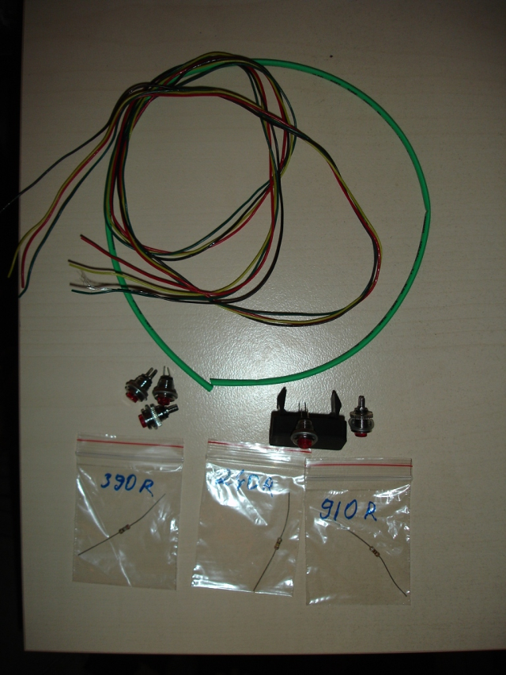
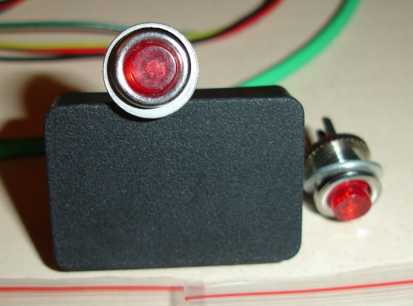
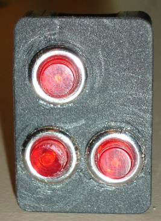
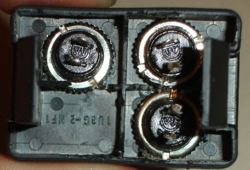
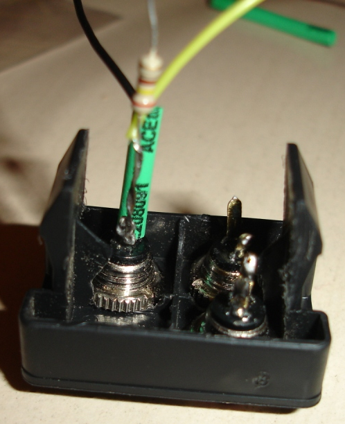
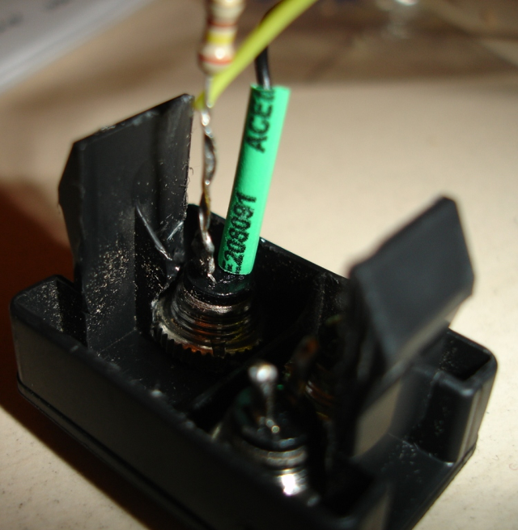

Пока собирался да выходил из отпуска, опередили  Делал на 17 комплектацию с механикой. Работа заняла час времени, помог друг. И затем утром машина была протестирована в дальней поездке. Есть некоторые различия в креплении самой схемы, а принцип тот же. Почему выбрал вариант колхозный? Не было времени ждать зап части, да и круизом пользуюсь 2 раза в год. Была боязнь разбирать руль, и поставить его на место криво. Также однозначно сыграла цена вопроса. Что было куплено: 1) 5 кнопок с резьбой (с возможностью закрепить их на площадке) размер подбирался таким образом чтобы 3 кнопки могли уместиться на площадке (на фото есть пропорции) 2) 3 Резистора номиналом 240, 390, 910 ом, последний не понадобился. 3) Провод длиной 1 метр с четырьмя жилами. То есть в сумме 4 метра провода. Сечение не помню, очень тонкие. 4) Кембрики сечение должно соответствовать диаметру резисора. Цена на все детали около 300 руб. Далее сверлиться 3 отверстия в подиуме, отверстия сверлил 1 вверхней части, два в нижней. Потому что так удобней при нажатии на кнопки. Верхняя - вкл/выкл, а две - и +, желательно чтобы диаметр отверстия был впритык с сечением кнопки. Тогда конструкция будет очень крепкая.Вставляем в отверстия кнопки, их я даже закручивал. Потом закручивем дополнительной маленькой гайкой от кнопки. На эти же кнопки припаиваем резисторы согласно схеме из предыдущего поста. При этом не забываем одевать вовремя кембрики.
Делал на 17 комплектацию с механикой. Работа заняла час времени, помог друг. И затем утром машина была протестирована в дальней поездке. Есть некоторые различия в креплении самой схемы, а принцип тот же. Почему выбрал вариант колхозный? Не было времени ждать зап части, да и круизом пользуюсь 2 раза в год. Была боязнь разбирать руль, и поставить его на место криво. Также однозначно сыграла цена вопроса. Что было куплено: 1) 5 кнопок с резьбой (с возможностью закрепить их на площадке) размер подбирался таким образом чтобы 3 кнопки могли уместиться на площадке (на фото есть пропорции) 2) 3 Резистора номиналом 240, 390, 910 ом, последний не понадобился. 3) Провод длиной 1 метр с четырьмя жилами. То есть в сумме 4 метра провода. Сечение не помню, очень тонкие. 4) Кембрики сечение должно соответствовать диаметру резисора. Цена на все детали около 300 руб. Далее сверлиться 3 отверстия в подиуме, отверстия сверлил 1 вверхней части, два в нижней. Потому что так удобней при нажатии на кнопки. Верхняя - вкл/выкл, а две - и +, желательно чтобы диаметр отверстия был впритык с сечением кнопки. Тогда конструкция будет очень крепкая.Вставляем в отверстия кнопки, их я даже закручивал. Потом закручивем дополнительной маленькой гайкой от кнопки. На эти же кнопки припаиваем резисторы согласно схеме из предыдущего поста. При этом не забываем одевать вовремя кембрики.  Что получилось можно посмотреть на фото. Далее идем в машину снимаем кожух рулевой колонки. Снимается легко, нужно подвигать две половинки относительно друг друга, а там по ситуации. Подключаемся к имеющейся проводке согласно последнего рисунка. Все круиз готов к работе. Светиться надпись круиз при включении, работают кнопки по фиксации скорости и уменьшению/добавлению скорости. Отключается режим К-К штатно. Чем мне понравился этот метод не нужно возиться с платой. Все просто и собирается на коленке. Пока не знаю как провести провод от подиума до рулевой колонки. В торопях бросил его поверх панели. Если подскажете буду рад.
Что получилось можно посмотреть на фото. Далее идем в машину снимаем кожух рулевой колонки. Снимается легко, нужно подвигать две половинки относительно друг друга, а там по ситуации. Подключаемся к имеющейся проводке согласно последнего рисунка. Все круиз готов к работе. Светиться надпись круиз при включении, работают кнопки по фиксации скорости и уменьшению/добавлению скорости. Отключается режим К-К штатно. Чем мне понравился этот метод не нужно возиться с платой. Все просто и собирается на коленке. Пока не знаю как провести провод от подиума до рулевой колонки. В торопях бросил его поверх панели. Если подскажете буду рад.






”Ещё появились вопрос:
- как подключались к разъему?
- разъем Е6 это который входит в Спиральный кабель? если да то, что нужно разбирать?“
К разъему непосредственно не подключался (побоялся испортить), сделал врезку в сам провод.